ในการเก็บรวมรวมข้อมูล แต่ละคนที่เก็บรวบรวมข้อมูลมีการจัดเก็บข้อมูลที่ไม่เหมือนกัน นั่นคือ บางคนอาจจะเก็บข้อมูล
เป็นตัว ๆ ไม่มีการจัดหมวดหมู่ หรือ บางคนอาจจะมีการจัดเรียงข้อมูลเป็นหมวดหมู่เรียบร้อยแล้ว
เราจึงแยกการจัดเก็บข้อมูลเป็น 2 แบบ คือ ข้อมูลไม่แจกแจงความถี่ และ ข้อมูลแจกแจงความถี่
ข้อมูลไม่แจกแจงความถี่เป็นข้อมูลที่จะต้องมาเป็นตัว ๆ บอกได้ทันทีว่าตัวไหนมีค่าเป็นเท่าใด เช่น ข้อมูลคือ 1 , 1 , 5 , 7 , 8 , 11 มีข้อมูล 6 ตัว โดยที่บอกได้ทันทีว่าตัวที่ 5 มีค่าเป็น 8 เป็นต้น
ข้อมูลแจกแจงความถี่จะเป็นข้อมูลที่มีการแบ่งเป็นช่วง ๆ ไม่สามารถบอกได้ว่าแต่ละตัวมีค่าเท่าใด เช่น
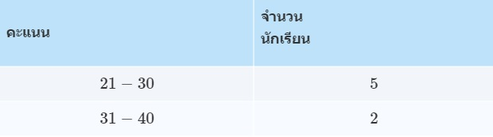
จะไม่สามารถบอกได้ว่าคนที่ 3 ได้คะแนนเป็นเท่าไหร่กันแน่ อาจจะได้ 25 หรือ 27 หรือ 23 หรือค่าอื่น ๆ ในช่วง 21−30 และข้อมูลแบบแจกแจงความถี่นั้นมักจะเขียนมาในรูปแบบตารางเสมอ
เมื่อเรารู้จักข้อมูลแจกแจงความถี่แล้ว เราจะต้องมาทำความเข้าใจกับตารางแจกแจงความถี่ด้วย ซึ่งสิ่งที่เราจะต้องรู้มีดังนี้ จากตารางการแจกแจงความถี่ต่อไปนี้
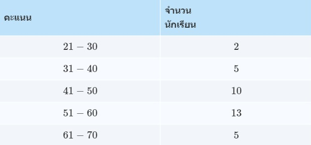
1. อันตรภาคชั้น คือ แต่ละช่วงที่เห็นในตาราง เช่น ช่วง 21 − 30 เป็นช่วงแรก ดังนั้นช่วงนี้ถือเป็นอันตรภาคชั้นที่ 1
ในทำนองเดียวกันจะได้ว่าตารางนี้มีทั้งหมด 5 อันตรภาคชั้น
2. ขอบบน - ขอบล่าง ในการหาขอบบนและขอบล่างของแต่ละชั้นนั้นหาได้ดังนี้
ขอบล่าง = ( ค่าน้อยสุดของชั้นนั้น + ค่ามากสุดของชั้นก่อนหน้า ) / 2
ขอบบน = ( ค่ามากสุดของชั้นนั้น + ค่าน้อยสุดของชั้นถัดไป ) / 2
3. ความกว้างอัตรภาคชั้น คือ ความกว้างอันตรภาคชั้น = ขอบบน − ขอบล่าง
4. จุดกึ่งกลางของอันตรภาคชั้น คือ จุดกึ่งกลางของอันตรภาคชั้น = ( ขอบบน + ขอบล่าง ) / 2
5. ความถี่ คือ จำนวนของสิ่งที่เราสนใจที่อยู่ในแต่ละชั้น ในกรณีนี้คือจำนวนนักเรียนในแต่ละชั้น ดังนั้น
ความถี่ในชั้นที่ 3 ( f3 ) คือ 10
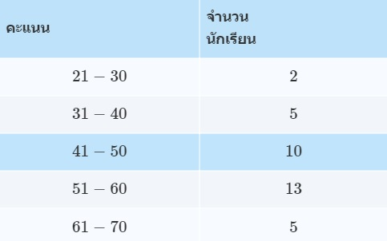
6. ความถี่สะสมของแต่ละชั้น คือ จำนวนของสิ่งที่เราสนใจที่รวมมาตั้งแต่ชั้นแรกจนถึงชั้นนั้น ดังนั้น
ความถี่สะสมในชั้นที่ 3 ( F3 ) คือ 2 + 5 + 10 = 17
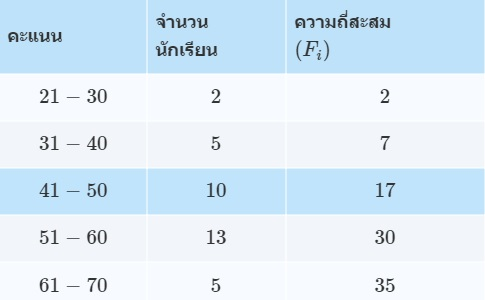
ค่าเฉลี่ยเลขคณิต หรือที่เราเรียกกันย่อ ๆ ว่าค่าเฉลี่ย เขียนแทนด้วยสัญลักษณ์ ( x̄ ) เป็นค่ากลางทางสถิติค่าหนึ่ง ที่เจอบ่อยและใช้เยอะมาก
หลักการการหาค่าเฉลี่ยง่าย ๆ คือ เอาค่าทั้งหมดที่มีรวมกัน แล้วนำมา หารด้วย จำนวนของข้อมูล
ข้อมูลไม่แจกแจงความถี่จะมีลักษณะเป็นตัวๆ คือ x 1 , x 2 , ⋯ , x n ดังนั้น ค่าเฉลี่ยเลขคณิต คือ
( x 1 , x 2 , ⋯ , x n ) / n
ข้อมูลแจกแจงความถี่ คือ ข้อมูลที่ให้มาเป็นช่วงไม่สามารถบอกได้ว่าแต่ละตัวมีค่าเท่าไหร่ เช่น ในช่วง 21 − 30 มีจำนวน 10 คน เราไม่สามารถบอกได้ว่าใน 10 คนนี้แต่ละคนมีค่าเท่าใด แล้วเราจะหาผลรวมได้ยังไง?
เนื่องจากเราเชื่อว่าในช่วง 21 − 30 นั้นย่อมมีทั้งคนที่ได้คะแนนมากและน้อยอยู่รวมกัน จึงใช้วิธีที่บอกว่าแต่ละตัวมากน้อยเท่าไหร่ไม่รู้ แต่สุดท้ายต้องเอามารวมกันอยู่ดี เราเลยประมาณได้ว่าทุกตัวมีค่าอยู่ตรงกลางพอดี
ดังนั้นถ้าเราให้ x i แทนจุดกึ่งกลางชั้นที่ i และ f i แทนความถี่ในชั้นนั้น
จะได้ว่าในชั้นนั้นมีผลรวมเท่ากับ x i f i จะได้ค่าเฉลี่ยเลขคณิตคือ
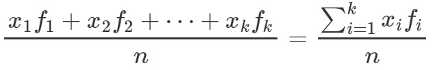
เมื่อข้อมูลมีทั้งหมด k ชั้น และมีจำนวนทั้งหมด n ตัว
การหาค่าเฉลี่ยเลขคณิตรวม ใช้ในการหาค่าเฉลี่ยเลขคณิตของข้อมูลมากกว่าหนึ่งชุด โดยที่ข้อมูลที่เรารู้คือ ค่าเฉลี่ยเลขคณิตของข้อมูลแต่ละชุด และจำนวนข้อมูลในแต่ละชุด
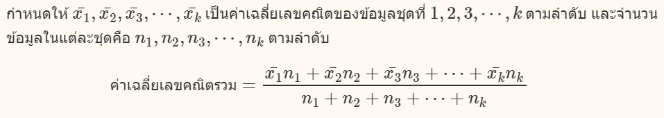
ทุกครั้งที่จะหาค่ามัธยฐานข้อมูลจะต้องเรียงจากค่าน้อยไปค่ามากเสมอ
ถ้าข้อมูลไม่แจกแจงความถี่ที่เรียงจากค่าน้อยไปค่ามาก คือ x 1 , x 2 , ⋯ , x n
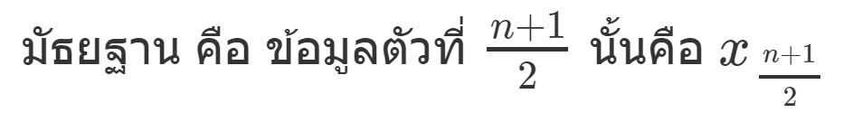
ในทำนองเดียวกันกับข้อมูลไม่แจกแจงความถี่ นั้นคือ จะต้องหาตัวตรงกลางให้ได้ มัธยฐานของข้อมูลแจกแจงความถี่ คือ
ให้มองหาข้อมูลที่มีการซ้ำกันมากที่สุด เช่น ข้อมูลไม่แจกแจงความถี่ คือ 2 , 3 , 4 , 5 , 6 , 4 , 7 , 6 , 6
จะเห็นว่าในข้อมูลชุดนี้มี 6 อยู่ 3 ตัว ซึ่งเป็นจำนวนตัวที่มากที่สุดแล้วเมื่อเทียบกับตัวเลขอื่น ๆ ฐานนิยมของข้อมูลชุดนี้คือ 6
ฐานนิยมของข้อมูลแจกแจงความถี่ คือ
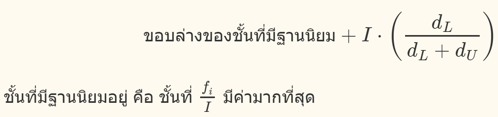
ฐานนิยมของข้อมูลแจกแจงความถี่ คือ
ควอร์ไทล์
( ควอร์ไทล์ที่ 2 จะมีค่าเท่ากับ มัธยฐานเสมอ )
ถ้าข้อมูล ไม่แจกแจงความถี่
ที่เรียงจากน้อยไปมากคือ x 1 , x 2 , ⋯ , x n แล้ว
ควอร์ไทล์ที่ k ( Q k ) ของข้อมูลชุดนี้คือ
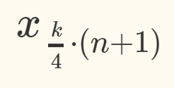
เมื่อ k = 1 , 2 , 3
ควอร์ไทล์ที่ k ของข้อมูล แจกแจงความถี่ คือ
เดไซล์
( เดไซล์ที่ 5 จะมีค่าเท่ากับ มัธยฐานเสมอ )
ถ้าข้อมูล ไม่แจกแจงความถี่
ที่เรียงจากน้อยไปมากคือ x 1 , x 2 , ⋯ , x n แล้ว
เดไซล์ที่ k ( D k ) ของข้อมูลชุดนี้คือ
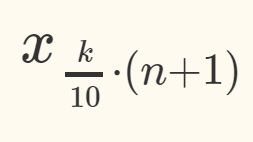
เมื่อ k = 1 , 2 , 3 , ⋯ , 9
เดไซล์ที่ k ของข้อมูล แจกแจงความถี่ คือ
เปอร์เซ็นไทล์
( เปอร์เซ็นไทล์ที่ 50 จะมีค่าเท่ากับ มัธยฐานเสมอ )
ถ้าข้อมูล ไม่แจกแจงความถี่
ที่เรียงจากน้อยไปมากคือ x 1 , x 2 , ⋯ , x n แล้ว
เปอร์เซ็นไทล์ที่ k ( P k ) ของข้อมูลชุดนี้คือ
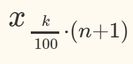
เมื่อ k = 1 , 2 , 3 , ⋯ , 99
เปอร์เซ็นไทล์ที่ k ของข้อมูล แจกแจงความถี่ คือ
สูตรแปรปรวนรวมมีหลายรูปแบบ แบบที่ง่ายที่สุด คือ ความแปรปรวนรวมของข้อมูลสองกลุ่มที่มีค่าเฉลี่ยเลขคณิตเท่ากัน ซึ่งจะทำให้ค่าเฉลี่ยเลขคณิตรวมเท่ากันด้วย
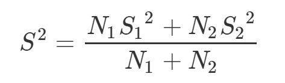
แต่ถ้าหากค่าเฉลี่ยเลขคณิตของข้อมูลสองกลุ่มไม่เท่ากัน จะต้องใช้สูตรความแปรปรวนรวมของข้อมูลสองชุดใดสูตรหนึ่งในสามสูตรต่อไปนี้
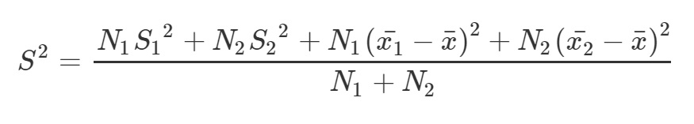
ส่วนถ้าเป็นข้อมูลมากกว่าสองกลุ่มขึ้นไปสามารถใช้สูตรความแปรปรวนรวมข้อมูล k ชุดได้ดังนี้
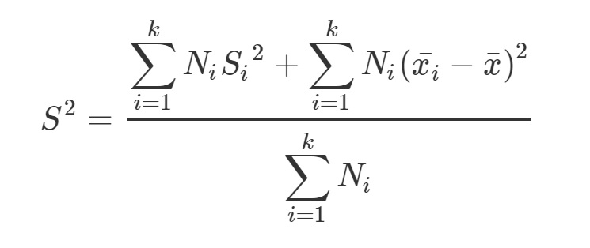
สัญลักษณ์ที่ใช้ในสูตร
x̄ = ค่าเฉลี่ยเลขคณิตของข้อมูลทุกชุดรวมกัน
x̄ i = ค่าเฉลี่ยเลขคณิตของข้อมูลชุดที่ i
N i = จำนวนข้อมูลในชุดที่ i
S 2 = ความแปรปรวนของข้อมูลทุกชุดรวมกัน
Si 2 = ความแปรปรวนของข้อมูลชุดที่ i
ค่ามาตรฐาน หรือ คะแนนมาตรฐาน เป็นค่าที่เราสามารถเอาไว้เปรียบเทียบข้อมูลระหว่างชุดได้ เพราะถ้าเรานำข้อมูลสองชุดมาเปรียบเทียบกัน จะมีปัญหาว่า ค่าเฉลี่ยไม่เท่ากัน ส่วนเบี่ยงเบนไม่เท่ากัน ทำให้ไม่รู้ว่าข้อมูลคนใครดีกว่ากัน แต่ถ้าเราเปลี่ยนข้อมูลของทุกคนให้อยู่ในรูป ค่ามาตรฐาน เราจะบอกได้ทันที เพราะว่าค่ามาตรฐานจะเป็นการเปลี่ยนค่าของข้อมูลให้อยู่ในมาตรฐานเดียวกันทั้งหมด
เส้นโค้งปกติมาตรฐาน
เส้นโค้งปกติมาตรฐาน คือ เส้นโค้งที่มีรูปร่างเป็นรูประฆังคว่ำและพื้นที่ใต้กราฟทั้งหมดเท่ากับ 1 โดยค่ามาตรฐาน ( z ) จะเป็นค่าที่แสดงในแนวแกน x
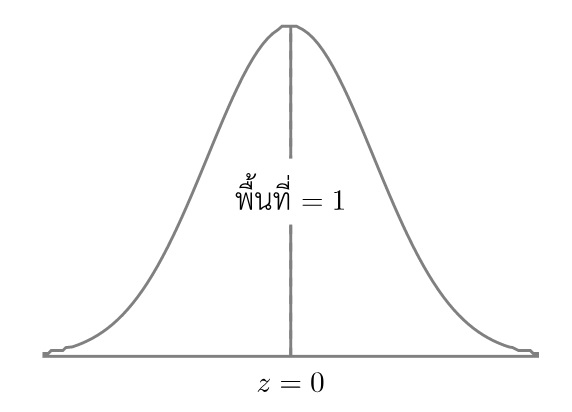
โดยที่จะมีเส้นแบ่งตรงกลาง คือ เส้นที่ค่า z = 0 ซึ่งจะทำให้พื้นที่ทั้งสองข้างเท่ากัน
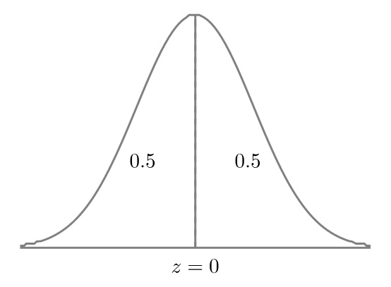
และรูปนี้เป็นสมาตรกัน นั่นคือ ถ้าห่างออกไปจากแกนตรงกลาง ( z = 0 ) เท่ากันจะได้ว่าพื้นที่สองฝั่งเท่ากัน
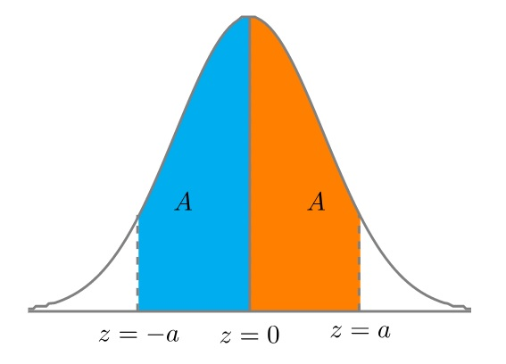
ความสำคัญอีกอย่างของเส้นโค้งปกติมาตรฐาน คือ ค่าตรงกลางที่ z = 0 หมายความว่าค่าเฉลี่ยเลขคณิตเท่ากับ 0 และเท่ากับมัธฐานและฐานนิยม
การอ่านตารางค่ามาตรฐานและพื้นที่ใต้กราฟ
ในเรื่องนี้จะมีตารางค่ามาตรฐานมาเกี่ยวข้องซึ่งตารางค่ามาตรฐานจะมีสิ่งที่เกี่ยวข้องกัน 2 สิ่ง คือ ค่ามาตรฐาน z และ พื้นที่ที่ได้ เช่น ถ้าตารางบอกว่า ค่า z = 1.96 ได้พื้นที่ใต้กราฟ 0.4750 คือ
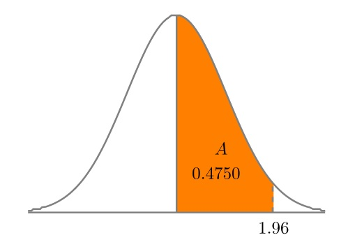
ถ้าโจทย์ที่ถามให้มาว่าค่า z เท่าไหร่ ได้พื้นที่เท่าไหร่ เราก็จะสามารถนำไปใช้ได้เลย แต่ถ้าเป็นในโรงเรียนทั่วไปจะไม่ได้ให้ค่ามาแต่จะให้เปิดหาค่าจากตาราง ซึ่งพี่จะนำส่วนหนึ่งของตารางมาให้ดู
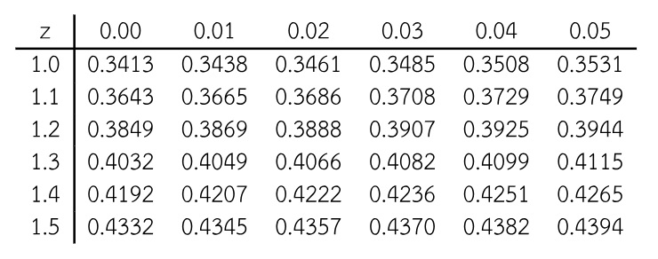
จากตารางการอ่านค่า z ให้อ่านจากหลักแรกและแถวแรก ซึ่งหลักแรกจะแทนจำนวนและทศนิยมตำแหน่งที่หนึ่ง และแถวบนสุดจะแทนทศนิยมตำแหน่งที่สอง เช่นถ้าต้องการค่า z = 1.12 ให้ดูแถวที่ หลักแรกเป็นเลข 1.1 แล้วไปดูหลักที่ แถวแรกเป็น 0.02 ตามรูป
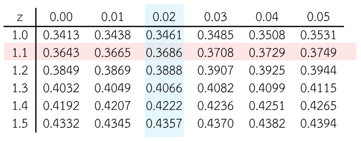
จะได้ว่าพื้นที่ที่ได้คือ .3686 ดังรูป
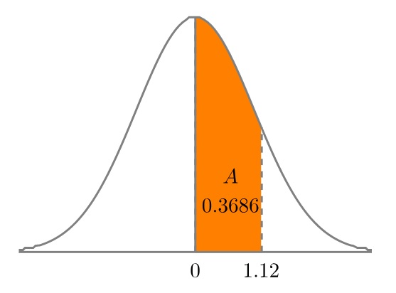
แต่ถ้าเราต้องการหาว่าค่า z เท่าไหร่ที่จะทำให้ได้พื้นที่เท่ากับ .4049 เราก็ต้องต้องไปหาเลข .4049 จากส่วนที่มีตัวเลขระบุพื้นที่ให้เจอก่อน เมื่อเจอแล้วเราก็จะอ่านค่า z ได้ ดังนี้
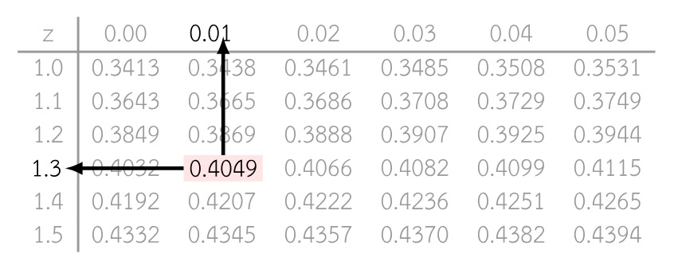
ดังนั้นได้ค่า z = 1.31
ถ้าข้อมูลที่ต้องการหาค่ามาตรฐาน คือ x ค่าเฉลี่ยเลขคณิตของข้อมูล คือ x̄ และส่วนเบี่ยงเบนมาตรฐานของข้อมูล คือ sd จะได้
z = ( x - x̄ ) / sd